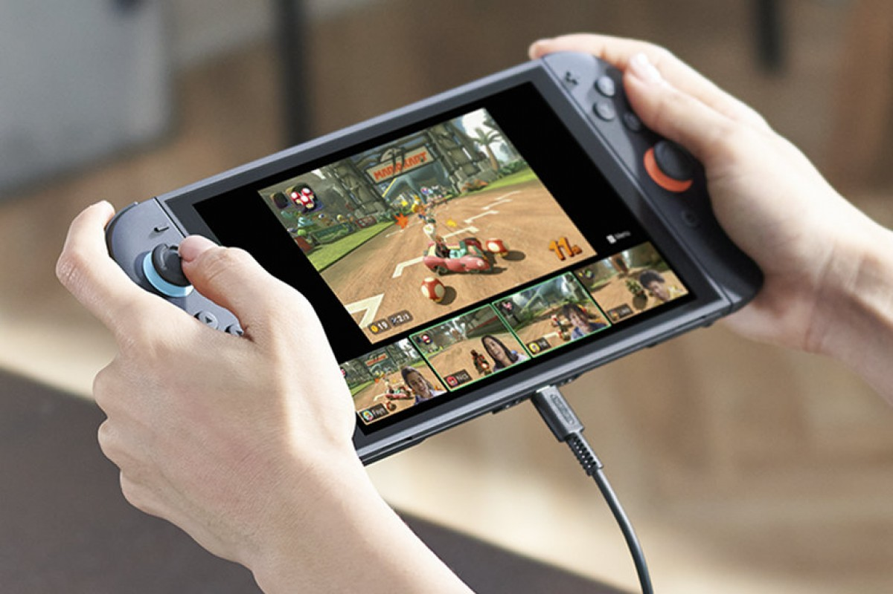

មករំលឹកពីលក្ខណៈសម្បតិ្តរបស់ខ្លះ Nintentdo Switch 2 ដែលនិងចេញលក់នៅប៉ុន្នានថ្ងៃខាងមុខនេះ
ថ្ងៃចេញផ្សាយ៖ 27/07/2025

កាលពីប៉ុន្នាថ្ងៃមុននេះ ក្រុមហ៊ុន Nintendo បានប្រកាសចេញម៉ាស៊ីនលេងហ្គេមកាន់ដៃថ្មីរបស់ខ្លួនគឺ Nintendo Switch 2 ដែលមានរូបរាង និងកំលាំងម៉ាស៊ីនថ្មី ហើយមកជាមួយនិងហ្គេមផ្ដាច់មុខ និងហ្គេម AAA ជាច្រើនដូចជា Mario Kart Wolrd, Donkey Kong Bananza, Eden Ring, Hogwarts Legacy, Cyberpunk ល។
នេះជាលក្ខណៈសម្បត្តិរបស់ Nintendo Switch 2 ដែលបានបង្ហាញនៅពេលប្រកាសចេញលក់៖
- ប្រើបន្ទះអេក្រង់ធំជាងមុន ប្រភេទ LCD ទំហំ 7.9inch កំរិតបង្ហាញ Full HD support HDR10 ជាមួយនិង Refresh rate 120hz
- បន្ទះ Chip ថ្មី custom ដោយ Nvidia
- ទំហំផ្ទះឡើងដល់ 256Gb
- ប្រើប្រាស់ WIFI 6 និងមាន USB Type C 2 port
- Joy-Con ជាប្រភេទឆក់ថ្មី ដែលឆក់ជាប់ជាមួួយតួរខ្លួនងាយស្រួលដកចេញ និងអាចយកមកប្រើប្រាស់ជា Mouse បានផងដែរ
- ចំណែកឯ Dock mode វិញ Support ដល់ 4K 60fps និង 1080p 120fp
- មាន Button C ថ្មីមួយ ដែលប្រើប្រាស់ ជា Game Chat មានមុខងារស្រដៀងនិង Discord សំរាប់ទំនាក់នង Call និងចែករំលែក Gameplay ទៅមិត្តភក្ភ ដែលប្រើប្រាស់ ម៉ាស៊ីនហ្គេមនេះដែរ។
តាមការប្រកាសនេះ Nintendo Switch 2 នឹងចេញលក់នៅថ្ងៃទី 05 ខែ មិថុនា ឆ្នាំ 2025 ជាមួួយតម្លៃ 449 ដុល្លារ និងប្រភទមានមកជាមួួយនិងហ្គេម Mario Kart World តម្លៃ 499 ដុល្លារ នៅទីផ្សារសហរដ្ឋអាមេរិច។